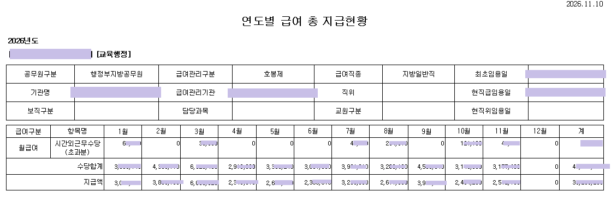
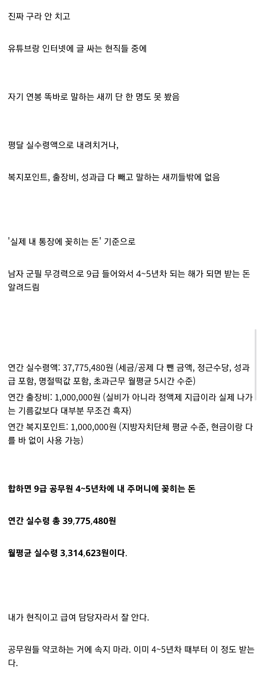

9급 출신 교육행정직이
4년차에 실수령액 330만원


9급 출신 교육행정직이
4년차에 실수령액 330만원
뉴스에 나오는 업무 핑계로 해외여행 가는 케이스의 공무원은 극소수고
그마저도 시의원, 구의원들 따까리로 따라가는거라 안가고 싶어하는 공무원이 더 많음

해외여행을가?
뉴스에 나오는 업무 명목으로 해외 가서 여행하고 오는 그런 케이스 보고 지껄이는듯
고공단 쳐 놀러가거나 시의원 따까리하러 끌려가는거 보고 개소리 하는건가? 누가 상급자들이랑 놀러 가고 싶어하나 가봐야 똥꼬빠는거 밖에 안할텐데
얘 세계관 속에선
의사가 환자 수술할 때마다 간 같이 재생되는 장기 조금씩 몰래 떼서 팔고
판검사들은 청사 지하에서 매일 마약섹스파티 할듯
작성자 작성글 존나 웃기네 ㅋㅋ
다른건 다 아해한다 쳐도 출장비는 대체 왜 포함 기키는거야 초과랑 ㅋㅋㅋ
어떻게든 올려치기해야하거든ㅋㅋ
출잔비를 급여에다 처 넣는건 진짜 신기한 초식이네 정액제로 주던거 한 15전에나 그런거 같은데
연말정산 할 때 출장비랑 시간외근무비 빼고 하는 거 아니잖아
국가에서 통계 낼 때도 전부 포함해서 통계내고 원징기준으로 잡는 거면 넣어야지
출장비는 월급 명세에도 안들어가고 출장 나간 일수대로 현금 지급해서 비과세로 알고 잇는데 연말정산에 들어간다고?? 첨 듣는 얘긴데 이게 진짜면 당장 급여 부서 뒤집어 엎어야 하는거 아냐?
들어가지 않아? 나 공군에서 장교할 때 출장비 지급 받는 거 들어갔던 거 같은데
군인이랑 공무원은 다를 수 있고 뭐
정액지급 아니면 안들어감 출장비는 기본적으로 실비 보상이라
그럼 뭐 출장비는 안들어가도 초과는 넣어야지
초과는 확실하게 연말정산에 들어갔던 거 같다
ㅇㅇ 그건 등어가지 다만 워낙 들쭉 날쭉란거다 보니까 원글에 잇던것처럼 몇시간 전제 이런게 좀 자세하게 들어가야 얘기되니 어렵지
공무원러버 ㅋㅋㅋㅋㅋㅋㅋㅋㅋㅋㅋㅋㅋ
교육직은 공무직 조차 탑클임
실무사쌤들 ㄹㅇ 시발거 벤스끌고다니면서 지혼자만 싱글벙글ㅋㅋㅋㅋㅋ
하는일도 거의 없음. 겸업도 자주 해서 돈은 확실히 좋음
ㅋㅋㅋㅋㅋㅋ 공무원한테 뚜드리 맞음?
중소기업보단 확실히 높은 것 같은데
출장비를 왜 넣는거지
9급관련글을 저렇게 많이 써놓고 답이 안 났나...
어어 강코하지마라..!
시발 내가 4년찬데 왜 저금액이 안되냐
그니까 그냥 인정하면 되는데 온갖 약코하니까 욕 처먹는거지
다른 직장도 성과급 포함해서 월급 계산함? 궁금쓰
공무원들 해외여행보내줌?